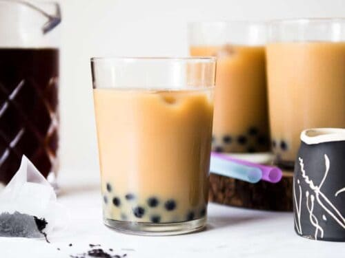

Brown Sugar Bubble Tea

Description
This is a versatile recipe: you can vary the tea and milk you use and sweeten it to taste.
Brew tea to your preferred strength, though it's a good idea to use strong tea
because you're going to dilute it with milk and ice. You'll need a wide straw to drink
the boba, or use a long spoon for fishing them out.
Ingredients
- 4 ¼ cups water, divided
- ¼ cup white tapioca pearls (boba)
- 2 tablespoons black tea leaves
- ¼ cup brown sugar
- 1 cup ice cubes
- ¼ cup milk
- 2 tablespoons sweetened condensed milk
Steps
-
Bring 2 cups water to a boil in a small saucepan. Add tapioca pearls and stir
gently until they begin floating to the top. Reduce heat to medium and simmer
until softened and dark, about 25 minutes. Remove from heat, cover, and let
sit for 15 minutes.
-
Meanwhile, bring 2 cups water to a boil. Remove from heat and add tea leaves.
Let steep for 15 minutes. Strain out tea leaves and refrigerate tea.
-
Drain pearls. Bring 1/4 cup water to a boil in the empty saucepan.
Stir in brown sugar until dissolved. Immerse pearls in syrup and
let sit until room temperature, about 15 minutes.
-
Divide pearls and desired amount of syrup between 2 tall glasses. Pour in tea.
-
Add ice, milk, and sweetened condensed milk to both glasses. Stir before drinking.